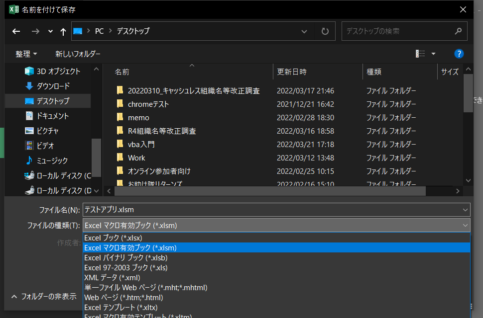

- 新規Excelブックを作成
- 「ファイル」→「名前を付けて保存」を選択
- 好きな場所に「テストアプリ.xlsm」と保存
※このとき、必ず「ファイルの種類」を「Excelマクロ有効ブック(*.xlsm)」にすること

- 「ファイル」→「オプション」を選択
- 「リボンのユーザー設定」→「開発」にチェック
- 「OK」を選択
- タブに「開発」と表示されていることを確認する
- 「開発」タブを開く
- 「Visual Basic」を選択し、VBE(Visual Basic Editor)を開く
- 「ツール」→「オプション」を開く
- 「編集」タブ内(最初から開かれているタブ)の「変数の宣言を強制する」にチェックを入れる

- 「OK」を選択
- VBEの画面左上の領域(「プロジェクトウィンドウ」という)上で右クリック→「挿入」→「標準モジュール」と選択

- 画面右側の入力用のウィンドウ(コードウィンドウ)の一番最初に「Option Explicit」と書かれていれば初期設定は完了
- コードウィンドウの
Option Explicitの次の行にsub Testと入力し、Enterキーを押下する - すると自動的に
subがSubと変換され、Testの後ろに()が追記される。また、End Subと表示される
Sub Test()以下を次のように記述する
Sub Test() MsgBox "これはテストです" End Sub
- 作成したプログラムを実行し動作を確認するため、
Sub Test()とEnd Subの間のどこかをクリックしカーソルを置く F5キーを押下する- 画面に「これはテストです」というメッセージボックスが表示されたことを確認し、「OK」ボタンを押下する

様々な動かし方を試してみる ①ステップイン
- 先ほど作成したコードを以下のように書き換える
Sub Test() Dim testString as String testString = "これはテストです。実施日時は" & Now() & "です" MsgBox testString End Sub
- 4と同様に、カーソルをSubプロシージャ内に置き、
F8キーを押下する Sub Test()が黄色くハイライトされる

- 再度
F8キーを押下すると、testString = ..."の行にハイライトが移動する - 更に
F8キーを押下すると、MsgBox testStringの行にハイライトが移動する。このときtestStringにカーソルを合わせると、testStringの内容を確認することができる。 - もう一度F8キーを押下すると、メッセージボックスが表示される

- メッセージボックスの「OK」を押下すると、
End Subの行がハイライトされている。更にF8キーを押下するとハイライトが消える
様々な動かし方を試してみる ②ブレイクポイント
MsgBox (testString)の行にカーソルを置き、F9を押下する- すると、カーソルを置いた業が褐色にハイライトされる
F5キーを押下する- 褐色にハイライトされた行が黄色くハイライトされる
- もう一度
F5キーを押下するとメッセージボックスが表示される - メッセージボックスの「OK」を押下すると、黄色いハイライトは消える